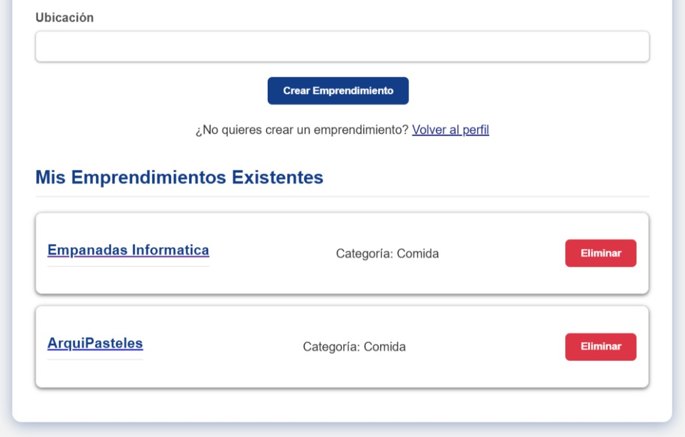

Tecnicas de levantamiento de informacion en el desarrollo de emprendiUNET
Prototipado del sistema "Registro y Gestión del Emprendimiento"
Se creo un prototipo del sistema para evaluar con retroalimentaciones su efectividad
Creacion del emprendimiento
Gestion del emprendimiento
Perfil del emprendimiento

Nuevo Post (Desde el perfil)
Para la investigacion de hechos se realizo una encuesta via Google Forms
En lugar de entrevistas formales en una etapa inicial, se realizará una encuesta vía online (Google Forms)
apoyándonos con el prototipo. Se envió la encuesta a emprendedores de la universidad, ajenos a la universidad
y a conocidos.
Link a la encuesta:
EmprendiUNET
A continuacion mostramos los resultados y explicamos brevemente la retroalimentacion de los mas importantes
La plataforma debe asumir que las ventas se concretarán fuera de EmprendiUNET. Por lo tanto, el sistema se diseñará para ser un portal de visibilidad, haciendo del botón de contacto por WhatsApp una prioridad alta y el principal llamado a la acción
Una pregunta es un cliente potencial con un gran interés de compra. El sistema debe incluir un módulo de notificaciones que sea altamente visible y urgente para los comentarios, ya que una respuesta rápida puede traducirse en una venta cerrada.
EmprendiUNET debe ser diseñado como una plataforma enfocada completamente en imágenes y videos. Este hallazgo justifica la necesidad de una infraestructura robusta que pueda manejar y mostrar múltiples archivos multimedia por publicación de manera fluida.
Para mejorar la búsqueda y la organización, y aprovechando la flexibilidad que nos ofrece una base de datos moderna (como NoSQL), decidimos que el campo de categorías debe ser adaptable. Cada publicación contará con un atributo que almacena una lista de texto (un string) con múltiples etiquetas, lo que permitirá clasificar y filtrar los productos de manera eficiente, sin la complicación de las tablas relacionales.
Para manejar las expectativas de los clientes y reducir el estrés del vendedor, incluiremos un atributo de Estado del Emprendimiento (por ejemplo: Activo/En Pausa) que será visible en todo momento en la interfaz. Esto se integrará directamente en el modelo de datos.